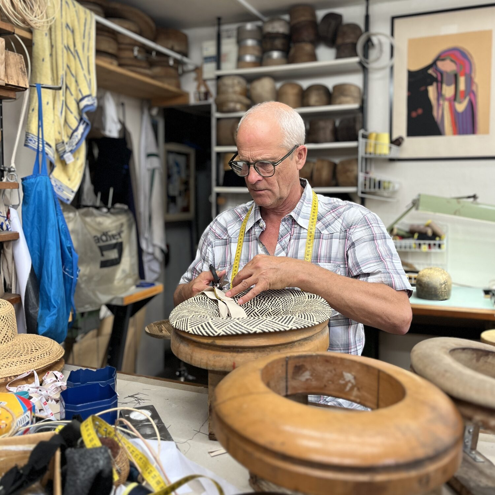
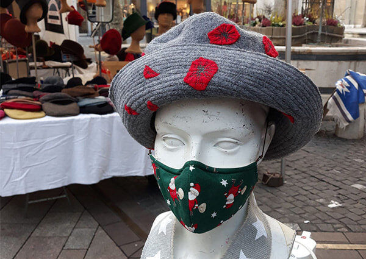
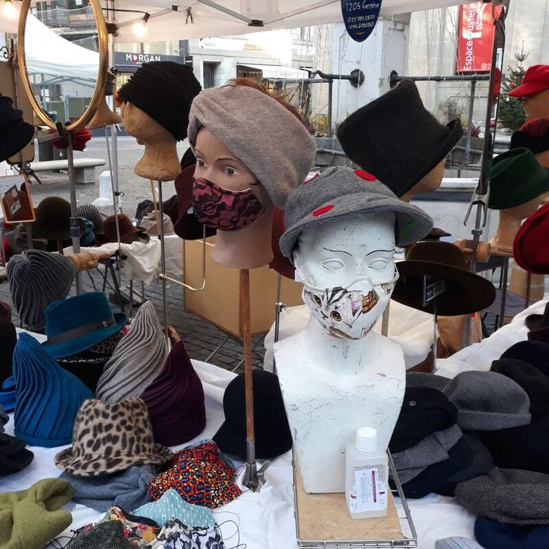
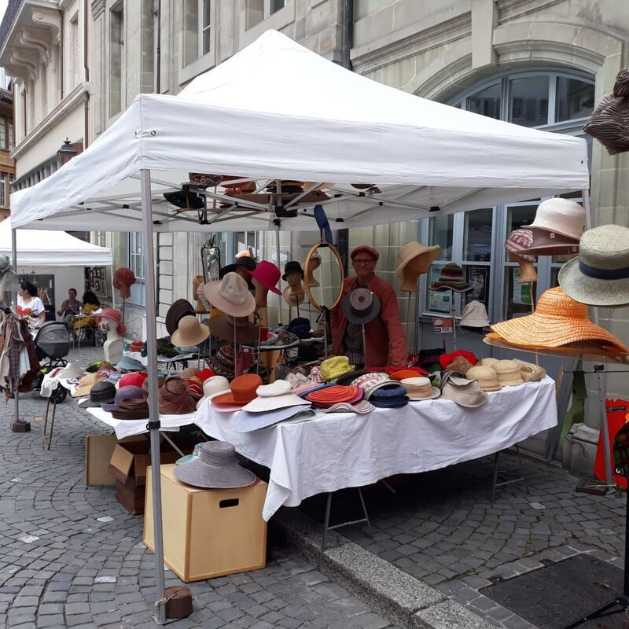
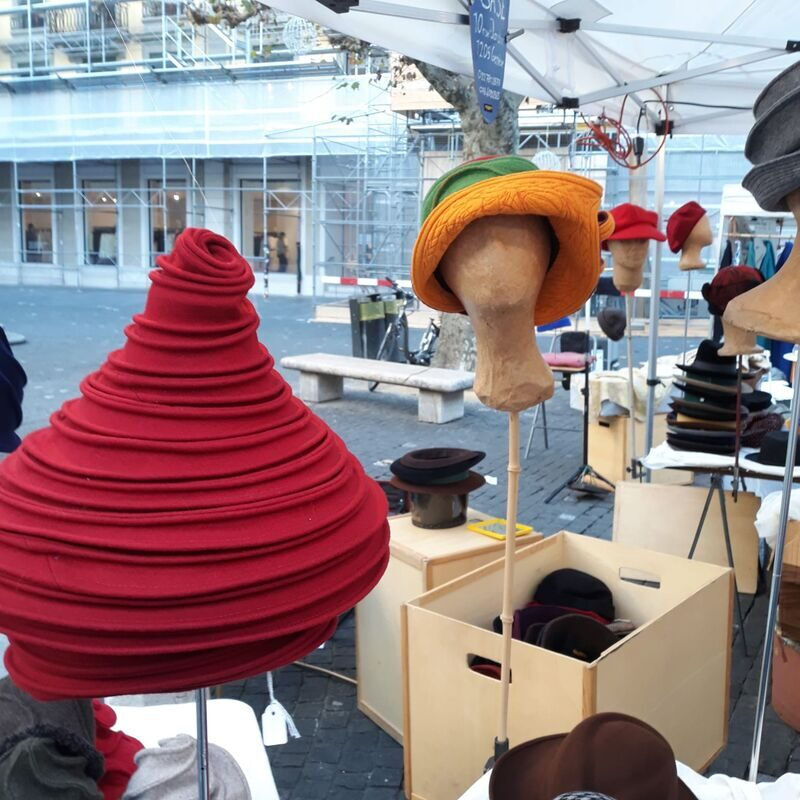
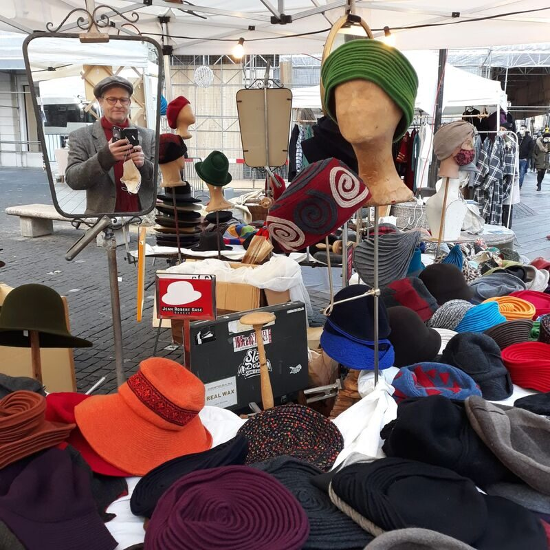
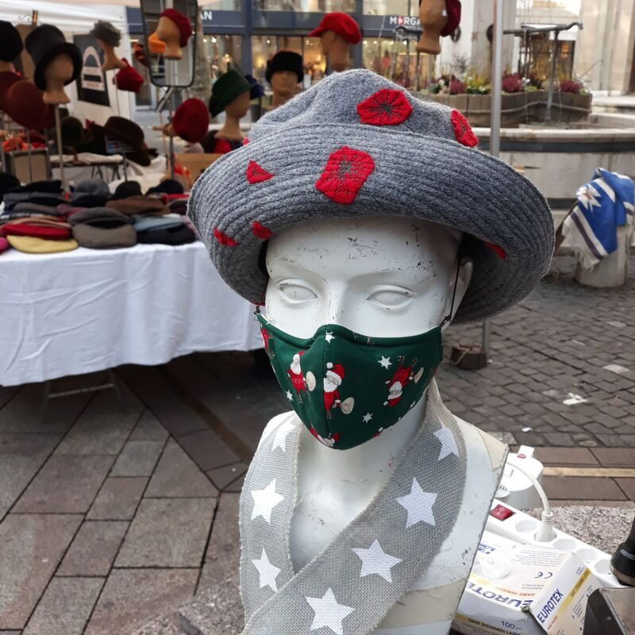

Artisan chapelier · modiste — depuis 1985
Des chapeaux façonnés à la main, à Genève.
Feutre, paille, colimaçon et casquettes : chaque pièce est faite main, pour femme et pour homme, dans l'atelier de la Rue des Jardins — sur rendez-vous et sur les marchés genevois.
- 1985Artisan depuis
- Fait mainChaque pièce
- GenèveLa Jonction

Là où naissent les pièces, une à une.
Quatre familles de chapeaux, toutes faites main.
Toutes les pièces sont faites main, pour femme et pour homme, dans des matières et des coloris variés — du feutre formé sur bois à la paille de la belle saison.
-
Chapeaux en feutre
Feutre travaillé et mis en forme sur bois — des pièces pour la ville comme pour les jours de froid.
Feutre -
Chapeaux en paille
Paille tressée et mise en forme à la main, pensée pour la belle saison et les beaux jours.
Paille -
Chapeaux en colimaçon
La pièce signature : le feutre enroulé en colimaçon, parfois rehaussé d'un appliqué de couleur.
Signature -
Casquettes
Casquettes en matières et coloris variés, pour femme et pour homme — l'allure de tous les jours.
Tous les jours

Pas de tarifs en ligne : chaque pièce étant faite main, son prix se discute à l'atelier ou sur le marché, selon la matière et le travail.
Un métier d'art, exercé depuis 1985.
Jean-Robert Gase est chapelier et modiste à Genève. Il façonne à la main feutre, paille et colimaçon — pour femme et pour homme.
Formé tailleur pour dames dans une maison de couture genevoise, il s'est spécialisé au fil de plusieurs cours avant de s'établir comme chapelier indépendant en 1985.
Depuis, son atelier de la Rue des Jardins, à la Jonction, est le lieu où naissent les pièces — une à une, à la main, sur les formes en bois.

L'atelier et le marché.
Quelques images de l'étal et des présentations, au fil des marchés genevois.




Prendre contact.
Pour une pièce, un projet ou une visite de l'atelier, écrivez-moi un mot — ou appelez directement.
L'atelier reçoit sur rendez-vous. Un mot ou un appel au préalable, et l'on convient d'un moment.
Où me trouver.
À l'atelier de la Jonction, sur rendez-vous — et sur les marchés genevois.
-
Atelier
Rue des Jardins 10
1205 Genève · La Jonction
Atelier en sous-sol -
Horaires
Sur rendez-vous, et lors d'occasions particulières.
Pas d'horaires fixes — contactez-moi pour convenir d'un moment. -
Sur les marchés
Présent sur les marchés genevois, notamment à l'Espace de la Fusterie.
Les jours de présence peuvent varier. - Me joindre
Questions fréquentes.
Comment acheter ou commander un chapeau ?
Sur rendez-vous à l'atelier de la Rue des Jardins, ou directement à l'étal sur le marché — notamment à l'Espace de la Fusterie. Le plus simple est de me contacter au préalable, par téléphone, e-mail ou WhatsApp.
L'atelier a-t-il des horaires fixes ?
Non. C'est un atelier de métier d'art, ouvert sur rendez-vous et lors d'occasions particulières. Écrivez-moi ou appelez, et l'on convient d'un moment qui convienne à chacun.
Quelles pièces faites-vous ?
Des chapeaux faits main en feutre, en paille et en colimaçon, ainsi que des casquettes — pour femme et pour homme, dans des matières et des coloris variés.
Faites-vous des pièces pour femme et pour homme ?
Oui. Toutes les pièces se font aussi bien pour femme que pour homme.
Y a-t-il une liste de prix ?
Chaque pièce étant faite main, son prix dépend de la matière et du travail. Le mieux est d'en discuter à l'atelier ou sur le marché — n'hésitez pas à me contacter pour un devis.
Où vous trouver sur les marchés ?
Je suis un habitué des marchés genevois, en particulier de l'Espace de la Fusterie. Les jours de présence peuvent varier : contactez-moi pour vous assurer de me trouver.